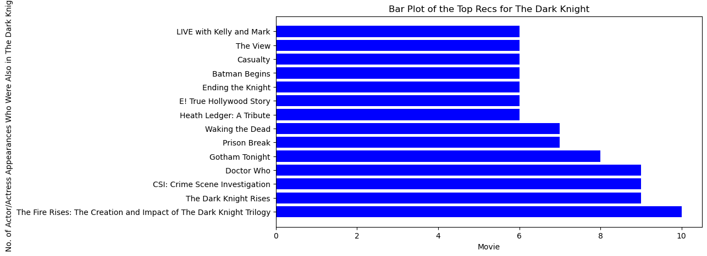

import scrapyIn this blog, we will learn how to extract data from HTML sites using webscraping. For our example, we will use movie sites.
Creating Scrapy Project
We will first start by running these two commands in the terminal:
scrapy startproject TMDB_scraper
cd TMDB_scraperRunning these lines will allow us to create a folder labeled “TBDB_scraper” which we will then for this webscraping tutorial.
Inside the inner “TMBD_scraper” will exists a python file called settings.py which we will want to add these two lines:
USER_AGENT = "Mozilla/5.0 (iPad; CPU OS 12_2 like Mac OS X) AppleWebKit/605.1.15 (KHTML, like Gecko) Mobile/15E148"
DOWNLOAD_DELAY = 2Adding this line will be crucial for the 403 Forbidden errors, which commonly arises since these websites have detectors that see that we are scraping the website, so they want to block us from this action.
The first line USER_AGENT helps implement a fake user agent for all the requests that we will send, which makes it harder for the website to know if the requests are from a scraper (which it will want to block) or an actual user.
The second line DOWNLOAD_DELAY helps implement a randomization of request delays, which spaces out the requests over longer, patternless intervals to make the website flag us less frequently for scraping.
Implementing Scraping Methods
Now that we have our scrapy project, we want to create a tmdb_spider.py file in the spiders folder.
We first start by importing scrapy, which is the webscraping library which will allow us to do all of this.
Next, we need to create the spider class TmbdSpider which contains its name (tmbd_spider) that we will need to perform the webscraping along with the url for the movie from the website we are working with and its three parse methods. For this example, we will use The Dark Knight with the data from The Movie Dtabase. So, our code will look something like this:
class TmdbSpider(scrapy.Spider):
name = 'tmdb_spider'
def __init__(self, subdir = None, *args, **kwargs):
self.start_urls = [f"https://www.themoviedb.org/movie/{subdir}/"]And for the three parsing methods:
def parse(self, response):
"""
This method starts with the start_url which is a movie page on the website,
and proceeds by sending a request to the cast page of the movie from the start_url.
This has no outputs but sets up the request to be used in the parse_full_credits method.
"""
page = response.url + "/cast" # Adding on /cast to get the cast page of movie's url
yield scrapy.Request(page, callback = self.parse_full_credits)The parse method starts with the start_url and then sends a request for the movie’s cast page from the start_url, which will be used in the next defined method, parse_full_credits
def parse_full_credits(self, response):
"""
This method starts with the cast page of a movie given through the start_url
from parse function. It then iterates through all the actors's, actresses's links
on this page and sends a request for each actor's, actress's page. This
produces no outputs but sets up the requests to be used in the parse_actor_page method.
"""
for entry in response.css("ol")[0].css("li"):
actor_tag = entry.css("a::attr(href)").get() # Gets unique tag for each actor, actress
actor_link = "https://www.themoviedb.org" + actor_tag # Adding on tag to main website
# address to get the link to
# each actor's, actress's page
yield scrapy.Request(actor_link, callback = self.parse_actor_page)
Similar to the last method, this method starts with the cast page of the desired movie and then iterates through all the actor’s, actress’s links on this page and sends a request for each actor’s actress’s page, which will be used in the last defined method, parse_actor_page.
def parse_actor_page(self, response):
"""
This method starts with the actor/actress's page given by the
parse_full_credits function. It then iterates through all the movies that the
actor/actress has made an appearance. For each movie, the output will be
a dictionary where the key is thename of the actor, actress, and the value
is the name of the movie.
"""
actor_name = response.css("h2").css("::text").get() # Gets the name of actor,actress
for entry in response.css("div.credits_list bdi::text"):
movie_or_TV_name = entry.get() # Iterates through each movie appearance
yield {"actor" : actor_name, "movie_or_TV_name" : movie_or_TV_name} # Returns dictionaryThis method starts with the page of a certain actor, actress and iterates through all movies the this actor, actress has made an appearance and for each one movie we will return a dictionary with the their name and the movie’s name.
Great, now we can use our defined spider! So in terminal, navigate to the TMDB_scraper folder by running
scrapy crawl tmdb_spider -o results.csvwhich will return us a csv file with the completed list of all the movies that all the actors, actresses in our chosen movie has made an appearance in.
Creating Movie Recommender
Now that we have our completed data set, we will want to create an algorith to help us with movie recommendations.
We first start off by reading in our data, so we need to import the pandas and numpy libraries.
import pandas as pd
import numpy as np
results = pd.read_csv("results.csv")
results| actor | movie_or_TV_name | |
|---|---|---|
| 0 | Heath Ledger | Heath Ledger: A Tragic Tale |
| 1 | Heath Ledger | Joker: Put on a Happy Face |
| 2 | Heath Ledger | I Am Heath Ledger |
| 3 | Heath Ledger | The Fire Rises: The Creation and Impact of The... |
| 4 | Heath Ledger | Too Young to Die |
| ... | ... | ... |
| 4144 | Michael Caine | The Double |
| 4145 | Michael Caine | Blue Ice |
| 4146 | Michael Caine | The Fourth Protocol |
| 4147 | Michael Caine | Pulp |
| 4148 | Michael Caine | Get Carter |
4149 rows × 2 columns
As verification, we want to make sure that the number of actors and actresses listed in our data equals the size of the movie cast. So, we would run the code below:
len(results["actor"].unique())136Now, we want to create a 2-dimensional list with one column consists of all the movie names the actors or actresses have appeared in while the other column consists of the number of actor and actresses from The Dark Knight that was also in a certain movie.
movies_or_TV_shows = results["movie_or_TV_name"].unique() # Creating df containing all
# movie names with 0 repeats
rows, cols = (len(movies_or_TV_shows), 2)
rec_list = [[0 for i in range(cols)] for j in range(rows)] # Creating 2D lists, each unique movie
# gets in own row
index = 0
for movie_or_TV_show in movies_or_TV_shows:
"""
Iterating through each movie, creating a dataframe of all actors and actreses from
The Dark Knight movie that also appeared in the specific movie, and then counting
the number of actors and actresses
"""
panda = results[results["movie_or_TV_name"] == movie_or_TV_show]
num_shared_actors = len(panda)
rec_list[index][0] = movie_or_TV_show # Movie name list
rec_list[index][1] = num_shared_actors # Counting list
index += 1 # Updating listWith this list, we now need to sort it, which we can do using the sorted() function and lambda functions. Because we want the top movie recommendations first, we will use the reverse=True statement. Lastly, we want to convert this to a pandas dataframe to use later.
rec_list_sorted = sorted(rec_list,key=lambda l:l[1], reverse=True)
rec_list_sorted = pd.DataFrame(rec_list_sorted)
rec_list_panda = rec_list_sorted.rename(columns = {0: "Movie",
1: "No. Actors Appearing in Dark Knight"})
rec_list_panda| Movie | No. Actors Appearing in Dark Knight | |
|---|---|---|
| 0 | The Dark Knight | 138 |
| 1 | The Fire Rises: The Creation and Impact of The... | 10 |
| 2 | The Dark Knight Rises | 9 |
| 3 | CSI: Crime Scene Investigation | 9 |
| 4 | Doctor Who | 9 |
| ... | ... | ... |
| 3383 | Tony Awards | 1 |
| 3384 | Navy Log | 1 |
| 3385 | Mark Saber | 1 |
| 3386 | What's My Line? | 1 |
| 3387 | Morning Departure | 1 |
3388 rows × 2 columns
Note that for the first entry, “The Dark Knight” as a count of 138 when we were expecting to only get 136. This is because two actors, Heath Ledger and Tom McComas, are actually listed twice on their cast page, which accounts for the increase of two counts.
Great! Now we have our ordered list! Ignoring “The Dark Knight” with the highest count (which is a given), we can see that the next highest is “The Fire Rises: The Creation and Impact of the Dark Knight Trilogy,” a documentary about “The Dark Knight” trilogy (which also makes sense), so we shold ignore that one as well. The third highest is “The Dark Knight Rises,” followed by “CSI: Crime Scene Investigation” and then “Doctor Who.” These are our top three recommendations
Creating Data Visualization
To end, let’s create a data visualization showing a bar chart of number of shared actors for the movies.
Because there over 3,000 movies, let’s restrict the amount we want to include by imposing a minimum count. For this example, we will make it 6. Also, because we only want recommendations, we will exclude The Dark Knight in the visualization as well.
First we want to create our considered movie rec dataframe.
import matplotlib.pyplot as plt
bar_data = pd.DataFrame(rec_list_sorted) # Creating dataframe of 2D sorted list
bar_data = bar_data[bar_data[1] < max(bar_data[1])] # Removing The Dark Knight entry
bar_data = bar_data[bar_data[1] >= 6] # Restricting minimum score to be 6
bar_data| 0 | 1 | |
|---|---|---|
| 1 | The Fire Rises: The Creation and Impact of The... | 10 |
| 2 | The Dark Knight Rises | 9 |
| 3 | CSI: Crime Scene Investigation | 9 |
| 4 | Doctor Who | 9 |
| 5 | Gotham Tonight | 8 |
| 6 | Prison Break | 7 |
| 7 | Waking the Dead | 7 |
| 8 | Heath Ledger: A Tribute | 6 |
| 9 | E! True Hollywood Story | 6 |
| 10 | Ending the Knight | 6 |
| 11 | Batman Begins | 6 |
| 12 | Casualty | 6 |
| 13 | The View | 6 |
| 14 | LIVE with Kelly and Mark | 6 |
Finally, we can create our bar chart figure. Because we have titles as our independent variable, which can be long, we want to make a horizontal bar chart instead of a vertical one.
fig = plt.figure(figsize = (10, 5))
# creating the bar plot
plt.barh(bar_data[0], bar_data[1], color ='Blue')
plt.xlabel("Movie")
plt.ylabel("No. of Actor/Actress Appearances Who Were Also in The Dark Knight")
plt.title("Bar Plot of the Top Recs for The Dark Knight")
plt.show()